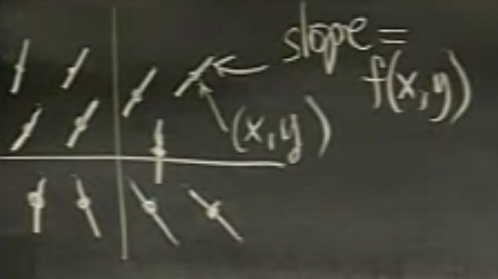
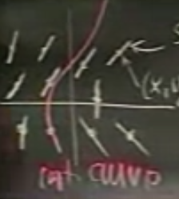
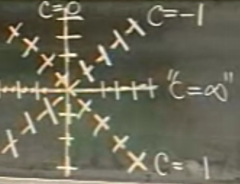
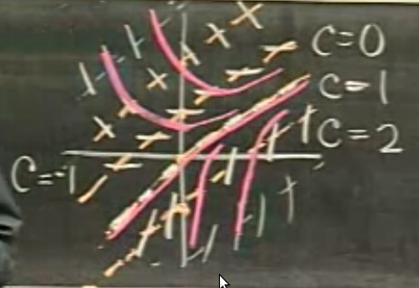
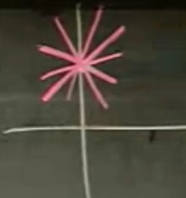
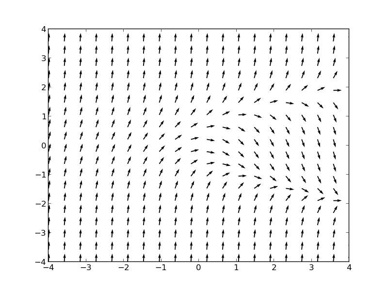

Ders 1
Birinci derece normal diferansiyel denklemler (ordinary differential equtions -ODE-) standart formunda $y'=f(x,y)$ gibi dururlar (bu form her zaman elde edilemeyebilir, ama şimdilik yapılabildiğini kabul edelim). Mesela
$$ y' = \frac{x}{y'} $$
ya da
$$y' = x-y^2$$
ya da
$$y' = y-x^2$$
Bu denklemlerden birincisi değişkenleri ayırma (seperation of variables) yöntemiyle rahatça çözülebilir. 2. ve 3. denklemlerde bu yapılamaz. 3. denklem başka bir şekilde kolayca çözülebilir, ama 2. analitik, formülsel olarak çözülemez. Yani daha ise başlar başlamaz en basit gözüken, sadece birinci derece türevi içeren ODE'de bile analitik çözüm olamayacağını görüyoruz. Bu formülü ileride sayısal olarak çözeceğiz.
Ve bu tür formüller matematikte istisna olmaktan ziyade kural sayılıyorlar (yani çok karşımıza çıkıyorlar).
Şimdi ODE'lere geometrik ve sayısal bakmanın yollarını göreceğiz.
Diyelim ki elimizde $y' = f(x,y)$ ODE'si var. Çözümlerden birinin $y_1(x)$ olduğunu düşünelim. Geometrik olarak
\begin{array}{cc} Analitik & Geometrik \\ \hline $y' = f(x,y)$ & Yön Alanları (Direction Field) \\ $y_1(x)$. & Entegral Eğrileri (Integral Curves) \end{array}
Entegral eğimleri nasıl çizilir? Her $x,y$ için $f(x,y)$'in verdiği değer o noktaya tekabül eden yerde bir "eğim (slope)" olarak kabul edilir, ve o eğime göre o noktada çizilir. Rasgele bir resim altta.

Sonra bu eğim parçacıklarına "her noktada" teğet geçen çizgiler çizilir (kırmızı renkliler), bunlar entegral eğimleridir.

Bir entegral eğimi, bir analitik çözüme eşdeğerdir. Teorisel olarak $y_1(x)$ $y'=f(x,y)$ için bir çözümdür, sadece ve sadece $y_1(x)$'in grafiği bir entegral eğri ise. İspat: $y_1(x)$'i ODE içine koyalım, $y_1(x) = f(x,y_1(x))$. Peki $y_1(x)$'in eğimleri nelerdir? Bu eğim $f(x,y_1(x))$'tır. İki taraf birbirine eşit olduğuna göre entegral eğrileri ve analitik çözüm birbirine eşittir.
Bu eğimleri nasıl çizeriz? Bilgisayar şöyle yapar: bir x,y seçer, o x,y için f(x,y)'yi mekanik olarak hesaplar ve o noktada bir eğim çizer. İnsan ne yapar: Bir "eğim" $c$ önceden "seçer", ve o $f(x,y)=c$ için bu formüle uyacak $f(x,y)$ ve onun üzerindeki eğim parçalarını birleştirerek çizmeye uğraşır.
Örnek
$$ y' = \frac{-x}{y} $$
$$ \frac{-x}{y} = c $$
$$ y = \frac{-1}{c}x $$
c=1 için 0,0 noktasından geçen bir çizgi vardır.

O zaman entegral eğrileri neye benzer? Bir çembere. Hatta değişken ayırma (seperation of variables) yöntemiyle çözseydik, sonuç $x^2+y^2=c^2$ türünde olacaktı ki bu bir çemberin formülüdür.
Bir başkası
$$y' = 1+x-y$$
Bir c için eğimler
$$y = 1+x-c$$
ya da
$$y = x+(1-c)$$

Entegral eğrilerini çizerken bazı kurallar vardır: Biri, entegral eğrileri çakışamazlar. Niye? Bu olabilseydi bir x,y noktasında iki ayrı eğim hesaplanabilir demek olacaktı, fakat elimizde tek bir $f(x,y)$ fonksiyonu var. Demek ki bu mümkün değil.
Ayrıca sonuşur olarak (sonsuza giderken, asymptotically) x sonsuza giderken eğrilerin sağ tarafta bir yöne doğru gruplandığını, meyil ettiğini görüyoruz. $y=x$'e doğru toparlanıyorlar. Demek ki $y=x$ bir çözümdür. Kontrol edelim, diferansiyel denkleme koyarsak,
$$y' = 1+x-y$$
$$x' = 1+x-x$$
$$1 = 1$$
Demek ki $y=x$ bir çözüm ve bunu sadece geometriye bakarak anladık.
İkinci kural: iki entegral eğrisi birbirlerine teğet bile olamazlar, yani birbirlerine dokunamazlar. İspat mevcudiyet ve özgünlük kanunu (existence and uniqueness theorem). Teori der ki $x_o, y_o$ noktasında $y'=f(x,y)$'in bir ve sadece bir tane çözümü vardır.
Örnek:
$$xy' = y - 1 $$
$$ \frac{dy}{y-1} = \frac{dx}{x} $$
İki tarafın entegralini al
$$ln|y-1| = ln|x| + c_1$$
$$y=1 = cx$$
$$y = 1-cx$$
Çözüm neye benzer? y=1 noktasından geçen her türlü düz çizgi bir çözümdür.

Fakat y kordinatı tamamı üzerinde çözüm yoktur. Kesişme olan noktada ise özgünlük yoktur. Yanlız diferansiyel denklemi $\frac{dy}{dy}$ solda olacak şekilde, formda tanımlamamız lazım.
$$ \frac{dy}{dy} = \frac{y-1}{x} $$
O zaman bu formülde x=0 noktasında formülün sürekliliğinin olmadığını (not continuous) görüyoruz, ve hakikaten de bu süreksizlik diferansiyel denklemin çözümünde mevcudiyet ve özgünlüğün bozulduğu yer ile aynı.
ODE dünyasında bu çözümsüz noktalar her zaman ortaya çıkabiliyorlar.
Grafik
Altta $y' = y^2-x$ formülünün vektör akış diyagramını grafiklemek için kullanılan Python kodları bulunabilir.
#
# MIT OCW ODE Mathlet Isoclines replacement in Python
#
from pylab import *
xmax = 4.0
xmin = -xmax
D = 20
ymax = 4.0
ymin = -ymax
x = linspace(xmin, xmax, D)
y = linspace(ymin, ymax, D)
X, Y = meshgrid(x, y)
deg = arctan(Y**2 - X)
QP = quiver(X,Y,cos(deg),sin(deg))
plt.savefig('isoclines.png')
